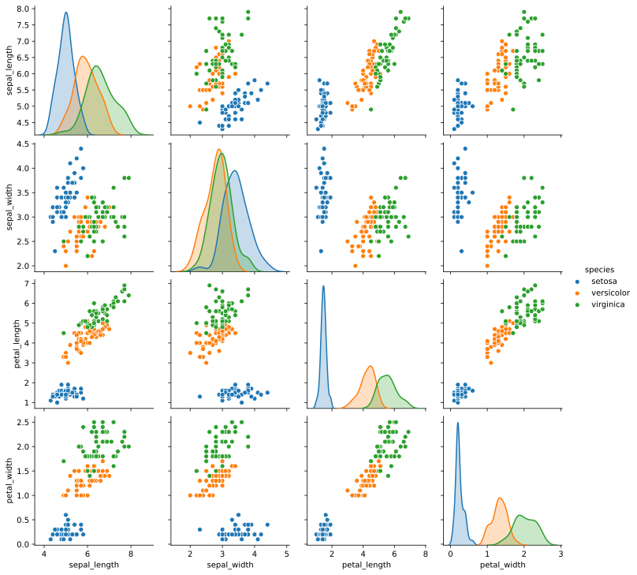
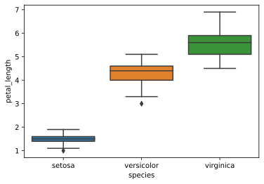

KNN algorithim
K Nearest Neighbours is a algorithim for finding out the similarity or distance b/w two things, to find out how alike/different they are.
Say we have a bunch of fruit, KNN will classify them into clusters by using what we know - with fruit this would be shape, size, weight, color, etc.
Anyways, lets start with the Iris dataset, which has 150 measurements of flowers:
iris = sns.load_dataset("iris")
print(f"Iris dataset shape: {iris.shape}")
iris.head()
Iris dataset shape: (150, 5)
| sepal_length | sepal_width | petal_length | petal_width | species | |
|---|---|---|---|---|---|
| 0 | 5.1 | 3.5 | 1.4 | 0.2 | setosa |
| 1 | 4.9 | 3.0 | 1.4 | 0.2 | setosa |
| 2 | 4.7 | 3.2 | 1.3 | 0.2 | setosa |
| 3 | 4.6 | 3.1 | 1.5 | 0.2 | setosa |
| 4 | 5.0 | 3.6 | 1.4 | 0.2 | setosa |
Now I'm sampling 5 random flowers from this data set so we can use our fancy new KNN algo to determine what kind of flower they are later on:
test = iris.sample(n=5)
test
| sepal_length | sepal_width | petal_length | petal_width | species | |
|---|---|---|---|---|---|
| 101 | 5.8 | 2.7 | 5.1 | 1.9 | virginica |
| 4 | 5.0 | 3.6 | 1.4 | 0.2 | setosa |
| 104 | 6.5 | 3.0 | 5.8 | 2.2 | virginica |
| 147 | 6.5 | 3.0 | 5.2 | 2.0 | virginica |
| 69 | 5.6 | 2.5 | 3.9 | 1.1 | versicolor |
And here I am deleting the sampled flowers from the iris dataset to make sure our algo hasn't seem the test flowers:
iris.drop(test.index, inplace=True)
print(iris.shape)
(145, 5)
Now to look at the data visually:
sns.pairplot(data=iris, hue="species");

It's pretty clear the the species are different, though there is some overlap at the boundaries.
Looking at petal length variation across species:
sns.boxplot(x="species", y="petal_length", data=iris);

Now to actually write the algorithim and figure out what species the flowers in the test data set belong to.
First, a helper function to calculate the distance b/w points:
def distance(x, y):
"""returns distance b/w two points x and y"""
assert len(x) == len(y)
inner = 0
for a, b in zip(x,y):
inner += (a - b)**2
return np.sqrt(inner)
distance((1,5),[5,5])
4.0
lets look at the values of the first flower in our test data and see if we can figure out what it is by using KNN:
test.iloc[0]
sepal_length 5.8
sepal_width 2.7
petal_length 5.1
petal_width 1.9
species virginica
Name: 101, dtype: object
def knn(item, data, n=3):
"""takes in an item to check and a dataset, of size 4 features each
returns the first n closest neighbours as a tuple (loc, distance)"""
dist = []
for i, row in data.iterrows():
dist.append((i, distance(row[:4], item)))
nearest = sorted(dist, key=lambda x: x[1])[:n]
species = [iris.loc[i[0]]["species"] for i in nearest]
return Counter(species).most_common()[0][0]
knn(test.iloc[0][:4], iris)
'virginica'
knn_species = []
for i, row in test.iterrows():
knn_species.append(knn(row[:4], iris))
knn_species
['virginica', 'setosa', 'virginica', 'virginica', 'versicolor']
test["knn"] = knn_species
test
| sepal_length | sepal_width | petal_length | petal_width | species | knn | |
|---|---|---|---|---|---|---|
| 101 | 5.8 | 2.7 | 5.1 | 1.9 | virginica | virginica |
| 4 | 5.0 | 3.6 | 1.4 | 0.2 | setosa | setosa |
| 104 | 6.5 | 3.0 | 5.8 | 2.2 | virginica | virginica |
| 147 | 6.5 | 3.0 | 5.2 | 2.0 | virginica | virginica |
| 69 | 5.6 | 2.5 | 3.9 | 1.1 | versicolor | versicolor |
All right! our KNN algo got all the 5 test species right!
I wrote this KNN algo a bit specifically targeting the iris dataset, but it can be modified to deal with with many different data sets.
The iris dataset is very simple, but usually I would normalize the data so all the attributes get a chance to effect the rating.